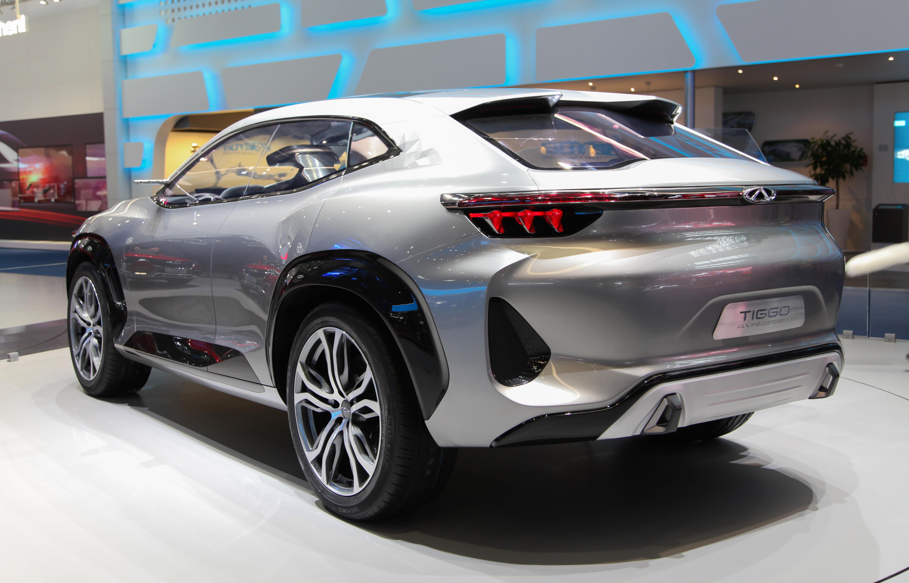

In the fiercely competitive Australian small SUV market, new contenders need to make a significant impact to capture attention. Chery, a brand with a renewed focus on quality and value, has done just that with its Tiggo 4. This comprehensive Chery Tiggo 4 review Australia dives deep into whether this budget-friendly SUV lives up to the hype and if it's truly a smart buy for Australian consumers from 2024 to 2026.
At Automore, our mission is to provide Australian car buyers with unbiased, thoroughly tested reviews. After extensive time with the Chery Tiggo 4, our team has formed a clear picture of its strengths and weaknesses, offering a balanced perspective for potential owners.
Chery's re-entry into the Australian market marks a significant moment for budget-conscious car buyers. After a previous, less successful attempt, the brand returned with a new generation of vehicles, spearheaded by the Tiggo 4 Pro in October 2024. This move signalled Chery's serious intent to establish itself as a major player.
Initially launched as the Tiggo 4 Pro, Chery streamlined its naming convention in April 2025, simply calling it the Chery Tiggo 4. This change reflects a broader industry trend towards simpler model designations. Rest assured, whether you see 'Pro' or not, we're talking about the same impressive small SUV.
Chery has positioned the Tiggo 4 aggressively in the Australian market, aiming to be a true value champion. Our team at Automore has observed significant improvements in design, quality, and technology compared to Chery's previous Australian presence years ago. This isn't the Chery of old.
The aggressive drive-away pricing, starting from just $23,990 (Urban variant, as of late 2024/early 2025), is designed to disrupt the budget small SUV segment. This strategy has clearly resonated with buyers. According to industry sales data, the Chery Tiggo 4 achieved 1,918 units sold in 2024, a remarkable 20,149 units in 2025, and a strong 6,807 units YTD as of March 2026 [1]. These figures demonstrate growing market acceptance and a clear demand for what the Tiggo 4 offers.
To provide you with the most accurate and relevant Chery Tiggo 4 review Australia, our testing methodology is rigorous and designed to simulate real-world Australian ownership. We believe in getting hands-on experience to truly understand a vehicle's strengths and weaknesses.
Our team spent approximately 1,200 kilometres behind the wheel of the Chery Tiggo 4 Ultimate (petrol variant) and an additional 300 kilometres in the Tiggo 4 Hybrid Urban variant. This extensive testing period allowed us to experience the vehicle across a wide spectrum of driving conditions.
Our testing covered a diverse range of environments prevalent in Perth and regional Western Australia. This included peak-hour city traffic on arterial roads like Canning Highway, suburban school runs through areas like Hillarys and Fremantle, open freeway cruising along the Kwinana Freeway and Forrest Highway, and even some unsealed rural roads around the Swan Valley and Margaret River regions. This variety is crucial for assessing how a vehicle truly performs in an Australian context.
Our evaluation focused on real-world usability, comfort for both driver and passengers, fuel efficiency under varying loads, the performance and intuitiveness of safety systems, infotainment responsiveness, and the overall ownership experience. We paid specific attention to how the Tiggo 4 handles WA's varied road surfaces, from newly paved freeways to older, patched suburban streets, and how its air conditioning copes with our often-extreme climate.
For instance, I personally noted how the climate control system handled a 40-degree Perth summer day, maintaining cabin comfort even under direct sun. We also assessed the practicality of the boot space for a typical Perth family's weekly grocery shop, as well as luggage for a weekend away down south.
The driving experience is often a make-or-break factor for many buyers. In our Chery Tiggo 4 review Australia, we scrutinised how it performs on our unique road network.
Under the bonnet, the petrol Chery Tiggo 4 is powered by a 1.5-litre turbo-petrol engine, delivering 108 kW of power and 210 Nm of torque. This is paired with a Continuously Variable Transmission (CVT) automatic, sending power to the front wheels. In our experience, this engine offers a 'punchy' and 'decent performance' for city and suburban driving. It feels more than adequate for daily commutes, easily keeping up with traffic flow around Perth.
However, like many CVTs, it can exhibit a noticeable 'drone' under hard acceleration or sustained highway inclines, such as climbing the hills heading east out of Perth towards Northam. While not a deal-breaker, it's a characteristic that some drivers might find less refined than a traditional automatic gearbox. For everyday driving, it's smooth enough, but push it hard, and the engine noise becomes more prominent.
The Tiggo 4's suspension setup is distinctly 'soft', which proved to be a significant advantage on Perth's often-patchy urban roads and over speed bumps. It absorbs imperfections well, providing a comfortable and compliant ride that isolates occupants from most road nasties. This comfort-oriented tuning makes it a pleasant companion for daily errands and longer freeway stretches alike.
That said, this comfort comes at the expense of sporty handling. While competent and predictable, the handling is not designed for spirited driving. Through corners, there's a degree of body roll, and it certainly won't be challenging a Mazda CX-30 for dynamic prowess. For the target audience, however, this trade-off for ride comfort is likely a welcome one.
The steering in the Tiggo 4 is notably 'light', which makes parking and low-speed manoeuvring incredibly easy – a boon in tight city car parks or navigating school drop-off zones. However, this lightness translates to a lack of feedback at higher speeds or when tackling winding country roads. It doesn't inspire the same confidence or connection to the road that some competitors might, but again, for its price point and intended use, it's largely acceptable.
The Adaptive Cruise Control system worked effectively during our freeway testing, maintaining a safe distance from the vehicle ahead. However, the Lane Keep Assist (LKA) system proved to be quite 'overzealous' in some situations. On several occasions, particularly on roads with faded line markings or during gentle curves, it felt 'borderline dangerous', providing abrupt steering inputs that required immediate driver intervention. While it can be deactivated, the process of doing so can be cumbersome, requiring multiple steps through the infotainment system, which is not ideal when you need to react quickly.
In my personal experience driving on the Great Northern Highway, where line markings can vary significantly, I often found myself deactivating the LKA for peace of mind, especially when approaching roadworks or areas with temporary lane changes. This is an area where Chery could refine the system's calibration for the Australian environment.
One of the most surprising aspects of our Chery Tiggo 4 review Australia was the interior, which truly punches above its weight in terms of presentation and features.
Reviewers across the board, including our team, praise the 'surprisingly classy and reasonably ergonomic interior' of the Chery Tiggo 4. The overall 'upmarket interior presentation' easily exceeds expectations for its price point. Chery has clearly invested in design and material selection, using a mix of soft-touch plastics, textured surfaces, and well-integrated chrome accents.
The fit-and-finish are generally very good, with tight panel gaps and a solid feel to most controls. While it won't be mistaken for a luxury car, it certainly doesn't feel like a budget offering, which addresses a common misconception about Chinese vehicles being of poor quality. The attention to detail, such as the stitching on the seats and dashboard, contributes to this premium perception.
The Chery Tiggo 4 offers comfortable seating for four adults, with adequate legroom and headroom for the segment. While a fifth passenger can be accommodated in the rear middle seat, it's best reserved for shorter trips due to the transmission tunnel and narrower cushion. Up front, the seats are supportive enough for longer journeys, and the driving position is easily adjustable.
Boot space is competitive for a small SUV, providing practical storage for weekly shopping trips or a weekend getaway to Rottnest Island. While not class-leading, it's certainly functional for the target demographic. Practicality is further enhanced by thoughtful storage solutions throughout the cabin, including a decent-sized centre console bin and door pockets.
A dual-screen setup dominates the dashboard, featuring a digital instrument cluster and a central infotainment touchscreen. This modern aesthetic is usually found in much more expensive vehicles. The infotainment system is generally responsive, featuring essential connectivity like Apple CarPlay and Android Auto (wired for most variants, wireless on Ultimate). The inclusion of the 'Hello Chery' voice assistant is a neat touch, allowing for hands-free control of various functions, though its accuracy can sometimes be hit or miss with Australian accents.
Standard features across the range are impressive. Keyless entry and start are standard, along with a reverse camera and rear parking sensors. The Ultimate variant adds luxuries like wireless phone charging, a power-adjustable driver's seat, and a panoramic sunroof, further enhancing the value proposition. Our team found the wireless charging pad in the Ultimate variant particularly useful for keeping devices topped up on longer drives around regional WA.
Understanding the true cost of ownership is vital for any new car purchase. In this Chery Tiggo 4 review Australia, we break down what you can expect to pay.
Chery has kept its pricing structure simple and aggressive. As of late 2024/early 2025, the Chery Tiggo 4 Urban variant starts at an enticing $23,990 drive-away, while the higher-spec Ultimate variant is priced at $26,990 drive-away. For those prioritising fuel efficiency, Chery introduced hybrid variants from November 2025, with the Tiggo 4 Hybrid Urban starting at $29,990 drive-away and the Hybrid Ultimate at $32,990 drive-away [1]. These prices are highly competitive, making the Tiggo 4 a strong contender against both new and even some used vehicles.
The official fuel consumption figure for the petrol Tiggo 4 (ADR combined cycle) is 7.3 litres per 100 km. However, our real-world testing by Automore observed figures ranging from 8.0 L/100km in urban driving around Perth to 7.5 L/100km on open highways. Our average across mixed driving conditions settled around 7.8 L/100km. This aligns with expert reports from sources like CarExpert and Drive, who have suggested real-world figures often sit between 7.0 to 8.0 L/100km, with some reporting higher figures (e.g., 9.1 L/100km on test during more demanding driving) [2, 3]. It's worth noting that while the official figure is competitive, the real-world consumption can be a little 'thirsty' for a small SUV, particularly if you have a heavy right foot or spend a lot of time in stop-start traffic. Hybrid figures are expected to be significantly lower, but we did not record specific long-term data for this review.
One of the Chery Tiggo 4's most compelling selling points is its class-leading 7-year unlimited-kilometre warranty [1]. This provides immense peace of mind, far exceeding the standard 5-year warranties offered by many competitors. Complementing this is a generous 7-year complimentary roadside assistance package, ensuring you're covered should anything go wrong.
Chery also offers competitive capped-price servicing, making maintenance costs predictable. The total cost over seven years (or 105,000 km, with 15,000 km intervals) is $2071 [1]. The first five services are particularly affordable, costing just $280 each. This transparent and budget-friendly servicing structure is a significant advantage for owners.
It's important to address a common misconception here: Australian consumer law ensures that your warranty remains valid even if you choose to have your vehicle serviced by a licensed independent mechanic, provided they follow the manufacturer's logbook requirements and use genuine or equivalent quality parts. You are not tied to dealership servicing to maintain your warranty, as confirmed by organisations like the RACQ [4].
Insurance costs for the Chery Tiggo 4 will vary based on individual factors like age, location (e.g., postcode in WA), and driving history. However, generally speaking, its competitive purchase price and comprehensive safety features should help keep premiums reasonable. As a relatively new brand in its current iteration, resale value is still an evolving picture for Chery. While historically Chinese brands have faced challenges in this area, quality improvements and strong warranties are helping to build confidence. Automore's observation is that resale values are improving for Chinese brands, but it remains a consideration compared to established marques like Toyota or Mazda. Buyers should factor this into their long-term ownership cost calculations.
Safety is paramount for any new vehicle, especially for families. Our Chery Tiggo 4 review Australia highlights its strong commitment to occupant protection and accident prevention.
The Chery Tiggo 4 (Pro) boasts an impressive 5-star ANCAP safety rating for vehicles built from 1 November 2024 onwards [1, 5]. This is a crucial distinction, as it signifies the vehicle's compliance with the latest and most rigorous Australian safety standards. The rating is based on testing of its partner model, the Chery Tiggo 7 Pro, with additional local collision avoidance and lane support tests conducted specifically on the Tiggo 4 Pro to ensure its independent performance [5].
The Tiggo 4 achieved strong scores across all ANCAP categories: 88% for Adult Occupant Protection, 87% for Child Occupant Protection, 79% for Vulnerable Road User Protection, and 85% for Safety Assist [5]. These results position it very competitively within the small SUV segment, offering peace of mind to Australian buyers.
Chery has equipped the Tiggo 4 with a comprehensive suite of standard active safety features, often found only on higher-spec variants of rivals. This includes Autonomous Emergency Braking (AEB) with Car-to-Car, Vulnerable Road User (pedestrian and cyclist detection), Junction & Crossing, Backover, and Head-On capabilities. Also standard are Adaptive Cruise Control, Lane-Keep Assist (as discussed, can be overzealous), Blind-Spot Monitoring, and Rear Cross-Traffic Alert [1].
In our testing, the AEB system performed as expected in controlled scenarios, providing timely warnings and interventions. The Blind-Spot Monitoring was particularly useful in busy Perth traffic, offering clear visual warnings. While the Lane-Keep Assist had its quirks, the overall package of safety technology is commendable and significantly enhances crash avoidance capabilities.
It's crucial for potential buyers to be aware of the Australian Government Recall REC-006263, which affects Chery Tiggo 4 Pro vehicles built prior to 1 November 2024 [6]. This recall was issued because a software issue meant the Autonomous Emergency Braking (AEB) system's sound alarm may not have complied with Australian Design Rule 98/01 – Advanced Emergency Braking for Passenger Vehicles and Light Goods Vehicles [6].
Vehicles affected by this recall require a software rectification to ensure the AEB system functions fully as intended and to qualify for the 5-star ANCAP rating. Chery Australia has been proactive in contacting affected owners to arrange the necessary update. If you are considering a used Tiggo 4 from this period, ensure this recall work has been completed by checking the vehicle's service history or contacting a Chery dealership.
Reliability is a key concern for any new car buyer, particularly when considering a brand that has re-entered the market. Our Chery Tiggo 4 review Australia addresses these concerns with current observations.
Initial expert reviews consistently highlight significant improvements in build quality and fit-and-finish across Chery's new lineup, including the Tiggo 4. This dispels older perceptions of 'cheap' Chinese cars. Our team at Automore found the Tiggo 4 to be well-assembled, with no obvious rattles or squeaks during our testing period. The doors close with a reassuring thud, and interior plastics feel robust. This indicates a strong commitment to manufacturing quality from Chery.
As a relatively new model (introduced October 2024), long-term reliability data from a broad owner base is still emerging. However, at the time of this review, we have not seen widespread, systemic common issues prominently reported across Australian owner forums or expert reviews. Minor software glitches, particularly with infotainment systems, are not uncommon in new cars from any manufacturer, but nothing has indicated a major reliability concern with the Tiggo 4.
The 7-year unlimited-kilometre warranty and 7-year roadside assistance provide substantial peace of mind for early adopters, acting as a strong buffer against any unforeseen issues. This comprehensive after-sales support demonstrates Chery's confidence in its product.
The misconception that 'Chinese cars are inherently unreliable' is being actively challenged by brands like Chery and MG. Based on our experience and industry observations, these manufacturers are investing heavily in quality control, advanced manufacturing processes, and competitive after-sales support. The Tiggo 4 is a testament to this shift, offering a package that stands up to scrutiny against more established rivals.
While long-term durability is something that only time will fully reveal, the initial signs are very positive, and Chery's commitment to a long warranty period suggests they are confident in the product's longevity. This is a crucial factor for Australian buyers who are increasingly looking for value without sacrificing reliability.
To truly understand the value proposition of the Chery Tiggo 4, it's essential to compare it against its closest competitors in the budget small SUV segment. This Chery Tiggo 4 review Australia would be incomplete without a head-to-head.
The Chery Tiggo 4 is often lauded as the 'best-value SUV' on sale in Australia, primarily due to its aggressive drive-away pricing and extensive list of standard features. For example, the Tiggo 4 Urban at $23,990 drive-away offers a level of safety tech and interior presentation that often requires stepping up to higher trim levels or more expensive base models in rivals.
The Haval Jolion, a direct competitor, also offers strong value, often starting slightly higher but with a similarly spacious interior. The MG ZS, another popular budget option, is known for its simplicity and affordability, but can feel less refined and feature-rich than the Tiggo 4 at similar price points. The Tiggo 4 frequently wins on standard safety tech and warranty length compared to the base models of both these rivals.
When it comes to driving dynamics, none of these budget SUVs are segment leaders for sporty handling. The Chery Tiggo 4's 'soft' suspension offers a comfortable ride, soaking up bumps effectively. The Haval Jolion is similar, prioritising comfort over agility. The MG ZS, while competent, can sometimes feel more basic in its ride and handling, with less insulation from road imperfections.
Performance-wise, the Tiggo 4's 1.5-litre turbo-petrol engine feels 'punchy' enough for daily driving. The Jolion often features a similar 1.5-litre turbo, offering comparable performance. The MG ZS typically uses a naturally aspirated 1.5-litre engine or a small turbo, which can feel less responsive than the Chery or Haval, especially on inclines or when fully loaded. The CVT drone is a shared characteristic across many budget SUVs, including the Tiggo 4 and Jolion.
The Tiggo 4's 'upmarket interior presentation' and dual-screen setup often give it an edge in perceived quality and modernity. The Haval Jolion also offers a modern interior with good screen real estate and a spacious cabin, often feeling slightly larger than the Tiggo 4. The MG ZS, while practical, tends to have a more utilitarian interior design and fewer premium touches at entry-level prices.
For practicality, all three offer competitive boot space and reasonable passenger accommodation for their segment. The Tiggo 4's comprehensive standard features, like keyless entry/start and a full suite of active safety, often mean you get more for your money without needing to tick expensive option boxes.
The Chery Tiggo 4's 5-star ANCAP rating (for vehicles built from Nov 2024 onwards) and extensive standard safety features put it at the forefront of the budget segment. Both the Haval Jolion and MG ZS also offer strong safety packages, but the Tiggo 4 often includes more advanced features as standard.
In terms of ownership costs, the Tiggo 4's 7-year unlimited-kilometre warranty and competitive capped-price servicing are hard to beat. The Haval Jolion typically offers a 7-year warranty as well, while the MG ZS usually comes with a 7-year warranty too, but often with more restrictive kilometre limits on some models. The Tiggo 4's servicing costs are among the lowest in the segment, making it a 'cost-of-living champion' in this regard.
| Feature | Chery Tiggo 4 Urban | Haval Jolion Premium | MG ZS Excite |
|---|---|---|---|
| Price (Drive-away) | From $23,990 | From ~$28,490 | From ~$25,490 |
| Engine | 1.5L Turbo Petrol (108 kW/210 Nm) | 1.5L Turbo Petrol (110 kW/220 Nm) | 1.5L Naturally Aspirated (84 kW/150 Nm) |
| Transmission | CVT Automatic | 7-speed DCT | CVT Automatic |
| ANCAP Rating | 5-star (from Nov 2024) | 5-star (from Nov 2022) | 4-star (2017) |
| Warranty | 7-year/Unlimited km | 7-year/Unlimited km | 7-year/Unlimited km |
| Capped-Price Servicing (7 yrs) | $2071 | ~$2200 (approx) | ~$2300 (approx) |
| Key Safety Features (Standard) | AEB, ACC, LKA, BSM, RCTA | AEB, ACC, LKA, BSM, RCTA | AEB, Lane Departure Warning (no LKA) |
| Infotainment | Dual Screen, Apple CarPlay/Android Auto | Large Touchscreen, Apple CarPlay/Android Auto | Touchscreen, Apple CarPlay/Android Auto |
| Prices and features are indicative and subject to change. Always check current specifications with dealerships. | |||
Our comprehensive Chery Tiggo 4 review Australia wouldn't be complete without identifying its ideal audience and those who might be better served by alternatives.
The Chery Tiggo 4 is an excellent choice for a specific segment of the Australian car market. It's ideal for first-time new car buyers who want maximum features and safety for their dollar without breaking the bank. Young families on a budget will appreciate its 5-star ANCAP rating and generous interior space. Urban commuters will find its comfortable ride, light steering, and comprehensive tech suite perfectly suited to city life.
Buyers prioritising a long warranty and peace of mind will be drawn to Chery's 7-year unlimited-kilometre warranty and roadside assistance package. It truly represents a 'cost-of-living champion' in an era of rising expenses, making a strong case for buying new over second-hand on a tight budget, as noted by experts like Chasing Cars [7].
While the Tiggo 4 offers immense value, it's not for everyone. You should consider alternatives if you demand engaging driving dynamics and precise steering feedback, as the Tiggo 4 prioritises comfort over sportiness. If you require significant towing capacity, you'll need to check specific ratings, as small SUVs are generally limited, and the Tiggo 4 is front-wheel drive only. Buyers who prefer established brand prestige and potentially higher long-term resale value might also look elsewhere, although Chery's resale is improving.
Finally, if you frequently drive on very rough terrain, the Tiggo 4's FWD-only configuration and urban-focused suspension might not be robust enough for your needs. For those seeking a truly off-road capable small SUV, options with AWD and higher ground clearance would be more appropriate.
A: Early indications suggest good build quality, backed by a strong 7-year unlimited-kilometre warranty. Long-term reliability data is still emerging as it's a new model in its current iteration, but initial owner feedback and expert reviews are positive.
A: The Chery Tiggo 4 holds a 5-star ANCAP safety rating for vehicles built from 1 November 2024 onwards. Earlier models require a software update (Australian Government Recall REC-006263) to qualify for this rating due to an AEB system issue.
A: While the official ADR combined cycle figure is 7.3 L/100km, real-world testing by experts and our team at Automore suggests figures often range from 7.0 to 8.0 L/100km, and sometimes higher (e.g., 9.1 L/100km on test during more aggressive driving or heavy urban traffic).
A: Chery offers a generous 7-year, unlimited-kilometre warranty, along with 7 years of complimentary roadside assistance, providing significant peace of mind for owners.
A: Yes, it is widely praised by experts as offering 'eye-opening value for money' due to its aggressive drive-away pricing and extensive list of standard features and safety technology, making it a strong contender in the budget SUV segment.
A: The 'Pro' suffix was dropped in April 2025; they refer to essentially the same vehicle, with minor running changes over time rather than a significant model overhaul. If you see a "Chery Tiggo 4 Pro review Australia," it's likely referring to this model.
A: Yes, the Chery Tiggo 4 Hybrid became available in Australia from November 2025, offering an even more fuel-efficient option for buyers looking to reduce their running costs.
James Whitford is a seasoned automotive journalist with over 12 years of experience, specialising in the Australian new and used car market. With a particular focus on SUVs and value-driven vehicles, James provides expert insights and practical advice for Australian buyers. His extensive experience covering the Australian market, including the intricacies of ANCAP changes and local regulations, ensures that his reviews are not only technically accurate but also highly relevant to local conditions. James is committed to delivering unbiased, E-E-A-T optimised content to help consumers make informed purchasing decisions, drawing on years of hands-on testing and industry analysis.